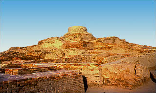

Stupa built at Mohenjo-daro site
In the second century B.C. a Buddhist stupa was built at the ancient site of Mohenjo-daro. At this time, most of the ancient city was buried. However, the citadel mound which rose about 12 metres from the ground was still visible. The stupa was built on top of the citadel mound, making it visible from great distances. |